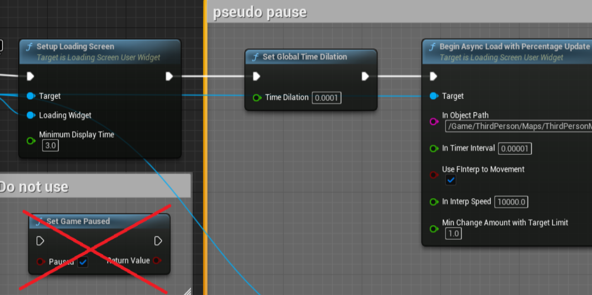
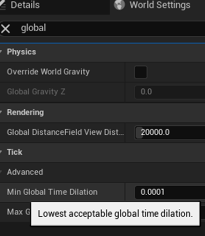
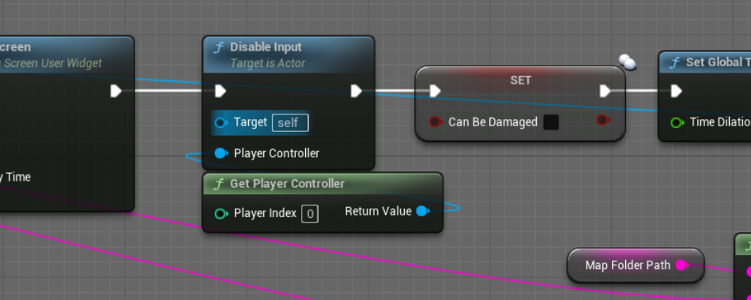

Fab-9.99$
This is a plugin that converts UMG into a slate widget, displays a loading screen, and displays the loading percentage with a progress bar and text.
Document-LoadingScreenWithLoadPercentage
This is a video on how to use it.
1.Activate the plugin

The plugin should probably be enabled by default, but if you can't use it, see below.
First, activate the plugin.
First, activate the plugin.

Check the plugin and restart the editor.
2.Configure UMG

Open the Plugin/LoadingScreenWithLoadPercentage Content folder.

If you can't see the plugin folder, check Show Plugin Content.

If you don't have your own UMG loading screen, duplicate BP_LoadingScreenUserWidget and move it to your content folder.

If you want to use your own UMG loading screen, change ParentClass in ClassSettings to LoadingScreenUserWidget.

If you want to display loading progress in a bar, it must be a ProgressBar.

If you want to display the loading progress as text, it must be Text.
Also, the Text of Content must be half-width or full-width %.
Also, the Text of Content must be half-width or full-width %.
3.Show loading screen

Here we will use a loading screen with the default character as an example.

First, select the loading screen you want to use with Create Widget.

Next, drag the Return Value of CreateWidget and use the SetupLoadingScreen function.
CreateWidget's Return Value needs to be connected not only to the Target but also to the Loading Widget.
Minimum Display Time:
specifies the minimum number of seconds of loading screen you want to display.
CreateWidget's Return Value needs to be connected not only to the Target but also to the Loading Widget.
Minimum Display Time:
specifies the minimum number of seconds of loading screen you want to display.

Next, drag the Return Value of CreateWidgetReturn Value of CreateWidget and use the BeginAsyncLoadWithPercentageUpdate function.
In Object Path:
You need the object path of the level you want to open to open the level and get loading progress. It's a little confusing, so I'll write about it below.
In Object Path:
You need the object path of the level you want to open to open the level and get loading progress. It's a little confusing, so I'll write about it below.

In Timer Interval:
Time interval to update percentages.
Use FInterp to Movement:
Smoothly move the progress bar and text that indicate loading progress. If you remove this check, accurate display will occur, but the values will change rapidly.
In Interp Speed:
The value used for FInterp to. The higher the value, the faster the loading progress will be.
Min Change Amount with Target Limit:
FIntterp to moves much slower when approaching 100%, so set it to the lowest value.
Time interval to update percentages.
Use FInterp to Movement:
Smoothly move the progress bar and text that indicate loading progress. If you remove this check, accurate display will occur, but the values will change rapidly.
In Interp Speed:
The value used for FInterp to. The higher the value, the faster the loading progress will be.
Min Change Amount with Target Limit:
FIntterp to moves much slower when approaching 100%, so set it to the lowest value.

About In Object Path.
In my case the reference is
/Script/Engine.World'/Game/ThirdPerson/Maps/ThirdPersonMap.ThirdPersonMap'
Delete this first and last symbol.
/Game/ThirdPerson/Maps/ThirdPersonMap.ThirdPersonMap
Be careful not to make a mistake.
・Add / in front of Game
・Delete the last '
In my case the reference is
/Script/Engine.World'/Game/ThirdPerson/Maps/ThirdPersonMap.ThirdPersonMap'
Delete this first and last symbol.
/Game/ThirdPerson/Maps/ThirdPersonMap.ThirdPersonMap
Be careful not to make a mistake.
・Add / in front of Game
・Delete the last '

If you play in the viewport or editor window, you can see the percentage movement in the output log.
Searching for Logtemp is invalid.
TargetPercentage: Actual progress.Target of FInterpTo.
CurrentPercentage: Percentage of progress bar or text.
ElapsedTime: Elapsed time since loading started.
Adjust it to your liking.
Searching for Logtemp is invalid.
TargetPercentage: Actual progress.Target of FInterpTo.
CurrentPercentage: Percentage of progress bar or text.
ElapsedTime: Elapsed time since loading started.
Adjust it to your liking.

The output log can be displayed from the Window at the top left.
4.Supplement

Loading screen editing must be done before SetupLoadingScreen.

recommend using custom events and interfaces to make it easier to use.
If you want to change it, you can just change that part.

In this example, we decided to put the map in a common folder and created an ObjectPath using Append.
A: MapFolderPath
B&D: LevelName
C: .（dot）
This makes it easier to use because you only need to enter the LevelName.
A: MapFolderPath
B&D: LevelName
C: .（dot）
This makes it easier to use because you only need to enter the LevelName.

We also recommend creating a Bool variable like IsLoading to limit the display of loading screens.
If you set the default value to false, it will automatically become false after the level transition, which is convenient.
If you set the default value to false, it will automatically become false after the level transition, which is convenient.

For the loading screen widget, we recommend using Scale Box, Stretch to Scale to Fit, and Stretch Direction to Both. (If you do not do this, the display may change during Open Level)

Added on 2024/02/25.
It is easier to adjust if SizeBox is a child of ScaleBox.
Set WidthOverride and HeightOverride to the size you expect.
Added on 2024/10/15
*There was information that using ScaleBox and SizeBox at the same time increases the speed. It may be better not to use SizeBox.
It is easier to adjust if SizeBox is a child of ScaleBox.
Set WidthOverride and HeightOverride to the size you expect.
Added on 2024/10/15
*There was information that using ScaleBox and SizeBox at the same time increases the speed. It may be better not to use SizeBox.
5.Note
5-1.Pseudo pause

This plugin will not work if you pause the game with SetGamePaused.
You can pseudo-pause it by using SetGlobalTimeDilation (example: 0.0001).
I think it would be a good idea to set InTimerInteraval to a value that is one-tenth of GlobalTimeDilation (example: 0.00001).
In this example, InInterpSpeed of 10000.0 seems good.
You can pseudo-pause it by using SetGlobalTimeDilation (example: 0.0001).
I think it would be a good idea to set InTimerInteraval to a value that is one-tenth of GlobalTimeDilation (example: 0.00001).
In this example, InInterpSpeed of 10000.0 seems good.

Note that the value of SetGlobalTimeDilation is clamped to the Min Global Time Dilation found in the World Setting.
The above example is for Min Global Time Dilation's default value of 0.0001.
The above example is for Min Global Time Dilation's default value of 0.0001.

Unlike poses, input actions are effective. If you have a problem, please limit it using DisableInput or a Bool variable such as IsLoading.
Also, since it doesn't completely stop the game, you may want to limit damage processing with something like CanBeDamaged.
Also, since it doesn't completely stop the game, you may want to limit damage processing with something like CanBeDamaged.